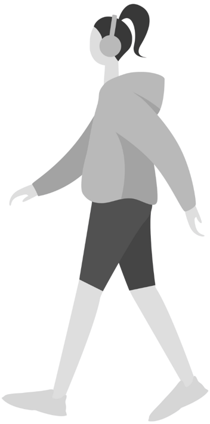
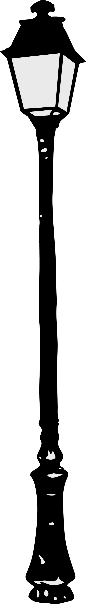

KALYESERYE
 
A unique form of art that is only found in the streets It typically occurs in metropolitan settings and is generated on surfaces in public locations, including sidewalks, overpasses, and outside building walls. Street art is a common medium for expressing artworks that are either connected to politics or social issues or are just for fun. These encompass a variety, such as "3D wall," "sidewalk chalk art," "graffiti art," "stencil graffiti," "sticker art," and "street poster art." Thus, not all street art consists of painting.